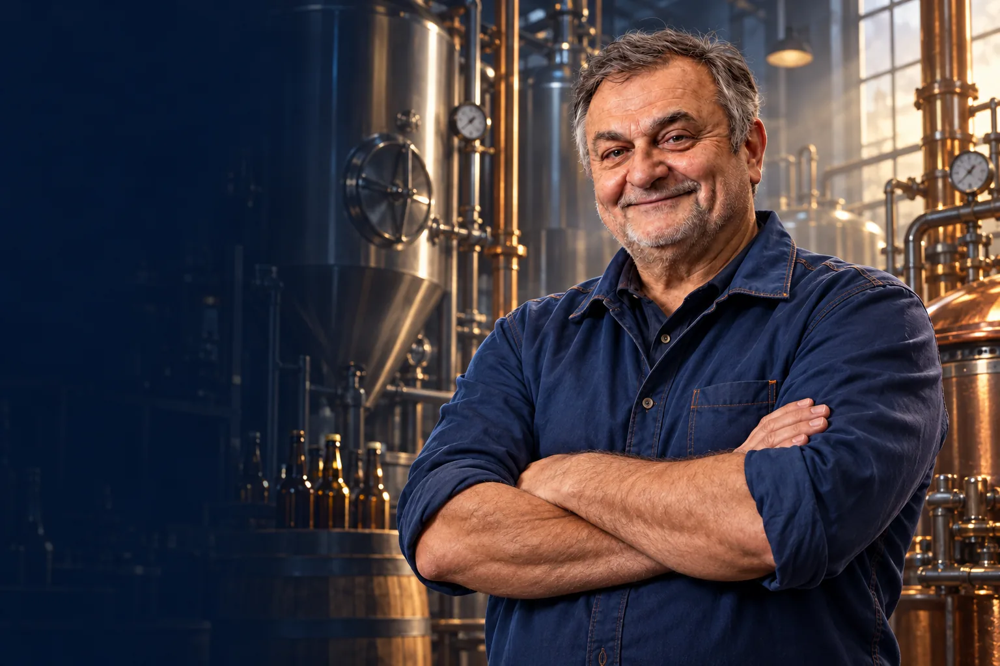
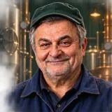

01 / Варочный цехПартия № 001 / заражена

Arkady is Back
ПОСЛЕДНЯЯ
ВАРКА
Тридцать лет у варочного котла.
Сегодня — против целого цеха микробов.
Аркадий снова выходит на смену.
Сложность
Выбери улучшение
Итог смены0очков
Рекорды в этом браузере
| № | Очки | Время | HP |
|---|
Рейтинг хранится только на этом устройстве.
АркадийПивовар. Ветеран. Последняя надежда цеха.
Изображение создано нейросетью
Здоровье100
Бутылка∞
Цех очищен0 / 12
Очки0
Тайники0 / 0
×2комбо
Смена приостановленаПерерыв
Esc продолжить
Перерыв
на пену
Esc продолжитьУправление
Графика
Звук
W A S D движение Мышь / ← → прицел Клик / Пробел огонь1–4 оружие E действие Esc пауза M карта F экран
АрсеналИнструменты санобработки. Выбирай на клавишах 1–4